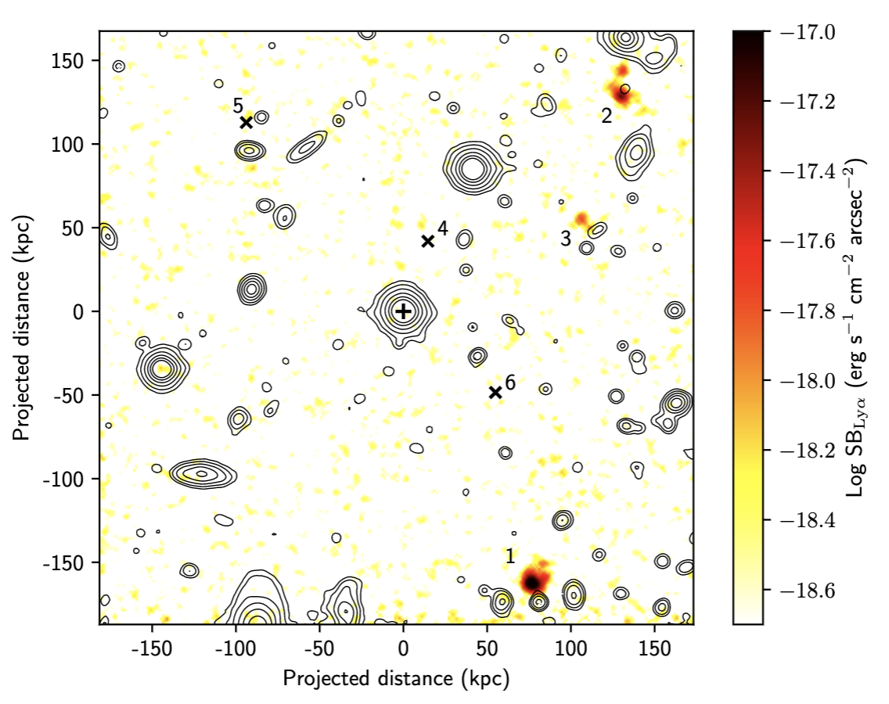

MAGG
PI: Michele Fumagalli; Lead Scientist: Emma Lofthouse
The MUSE Analysis of Gas around Galaxies (MAGG) is a 106 hour Large Programme using MUSE at the Very Large Telescope to study the galaxy environment of strong absorption line systems in 28 high-redshift quasar fields for which high-dispersion spectroscopy from HIRES, UVES, and MIKE is available. To download the MUSE data visit the ESO archive.
Find the MAGG papers on ADS.